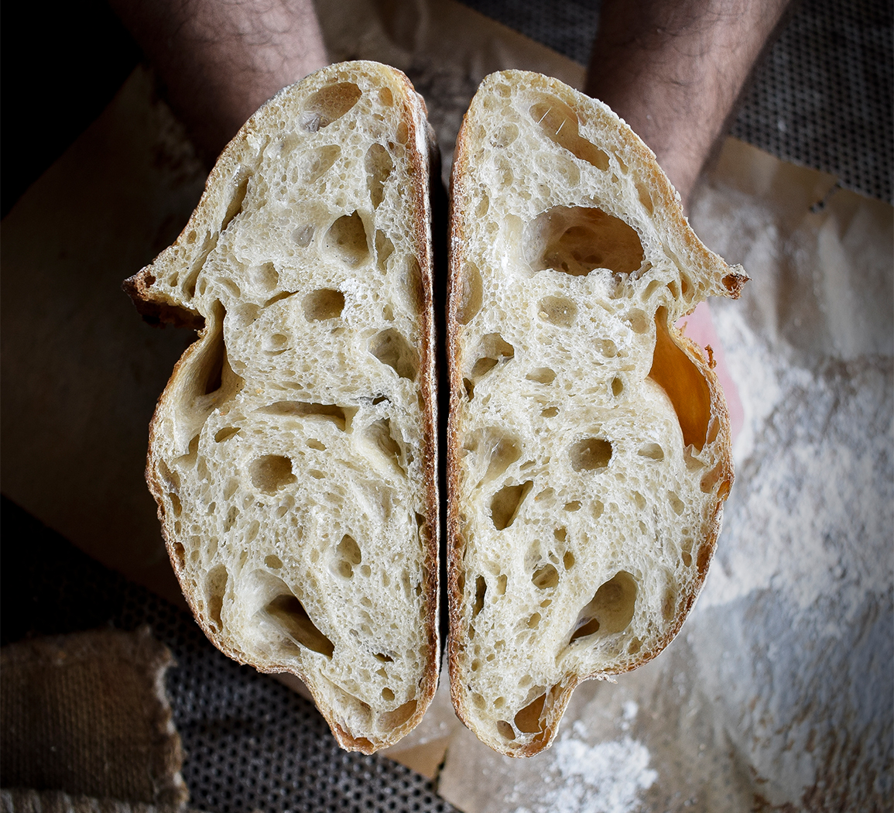

Italiensk surdejsbrød
Home

Description
Bag dit eget italiensk surdejsbrød med masser af smag fra surdejen og den lange hævetid. Opskriften er udviklet af vores egen bager og surdejsnørd Allan Salmi Sommer.
Opnå en større smagskompleksitet og et sprødt, saftigt brød ved bagning med surdej. Har du ikke allerede din egen surdej, så kan du læse mere om, hvordan du starter en surdej her.
Har du udfordringer til pasning og pleje af surdejen, så find vores guide til en surdej i topform.
Er du allerede godt i gang med surdejsbagning, så er det bare at komme i gang med opskriften herunder.
Læg mærke til at dejen laves dagen før brødet bages – og brødet bliver bedst hvis det hæver i min. 12 timer – gerne helt op til 24 timer.
Ingredients:
- 800 g Tipo 00 hvedemel
- 200 g fuldkornshvedemel
- 250 g fuldkornshvedesurdej
- 5 g gær (kan udelades)
- 800 ml vand (ca. 25°C)
- 25 g salt
How to:
- Alle ingredienser kommes i en stor skål og røres sammen med en stor røreske til en ensartet masse. Dette tager ca. 3-4 minutter.
- Dejen overføres til en passende bøtte eller skål med låg smurt med olivenolie. Har du tid, er det bedst at lade dejen stå på køkkenbordet i 1 time eller 2, men under alle omstændigheder kommes dejen i køleskab i minimum 12 timer – gerne længere.
- Dejen tages ud fra køl efter 12-24 timer. Nu skulle det gerne være en sammenhængende dej med tydelig glutenudvikling, dvs. elastisk og sammenhængende.
- Drys mel på køkkenbordet og vend dejen forsigtigt ud på bordet. Læg mærke til at dejen IKKE skal æltes og dejen skal håndteres meget nænsomt. Smag og saftighed sidder netop i den udviklede, hævede dej med masser af luft.
- Del dejen i 2 stykker og stram den forsigtigt op til 2 runde kugler.
- Dejkuglerne lægges i en hævekurv drysset med mel eller alternativt en passende skål, som beklædes med et rent viskestykke inden dejen kommes i
- Lad dejstykkerne hæve i mindst 2 timer. De skal være tydeligt hævet.
- Varm ovnen op til 250°C – husk en bageplade i ovnen. Tag den varme bageplade ud og placér et passende stykke bagepapir. Vend de 2 brød ud på bagepapiret og giv dem et snit på toppen med en skarp kniv.
- Bag brødene i ca. 25-30 minutter. Hvis de tager hurtigt farve skrues temperaturen ned til 230-220°C.